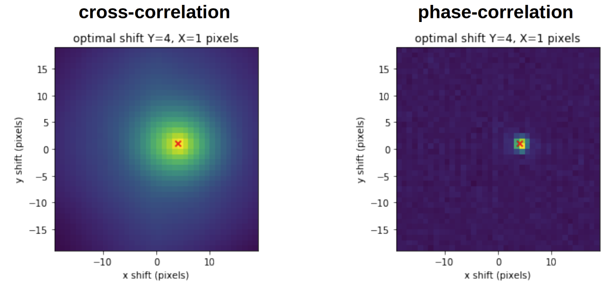

The Fourier Analysis in Suite2P
The writing notes: Download PDF
1 Motivation
There are 12 free paramters when we do registration for motion correction in Suite2P. People need to understand the full registration process in order to adjust these parameters based on their needs. Otherwise, one might produce a wrongly corrected figure and lead to a cascade of troubles in the following steps.
2 Dirac Delta Function and Fourier Intro
If you are interested in this part, please see my post regarding “The Dirac Delta Function and the Feynman Path Integral”.
3 Spatial Translation in Fourier Space
When we are comparing a shifted figure and its original figure, we can use the cross-correlation method to identify the shifting of a figure by finding the argmax. However, the method used by Suit2P is not the cross-correlation method. Instead, Fourier transformation based method can do a better job. Then how can we identify the “shifting” or “spatial translation” in the frequency domain?

We can illustrate this in 1-D first. Consider a 1-D reference signal \(f(x)\). Suppose the signal is shifted by a displacement \(\Delta\), producing \(g(x)=f(x-\Delta)\).
Taking its Fourier transform gives:
\[ G(k)=\int_{-\infty}^{+\infty}f(x-\Delta)e^{-ikx}\,dx \]
Substituting (\(u=x-\Delta\)):
\[ \begin{aligned} G(k) =\int_{-\infty}^{+\infty}f(u)e^{-ik(u+\Delta)}\,du\ =e^{-ik\Delta}\int_{-\infty}^{+\infty}f(u)e^{-iku}\,du\ =F(k)e^{-ik\Delta} \end{aligned} \]
If we express the Fourier transform in polar form \(F(k)=A(k)e^{i\phi(k)}\), then:
\[ G(k)=A(k)e^{i[\phi(k)-k\Delta]} \]
Therefore, spatial translation changes the phase of each Fourier component without changing its amplitude. The phase difference is:
\[ \Delta\phi(k)=-k\Delta\mod{2\pi} \]
For a two-dimensional image, suppose \(I_t(x,y)=I_{\mathrm{ref}}(x-\Delta x,y-\Delta y)\), its Fourier transform satisfies:
\[ F_t(k_x,k_y) =\iint I_{\mathrm{ref}}(x-\Delta x,y-\Delta y) e^{-i(k_xx+k_yy)}\,dxdy\ =e^{-i(k_x\Delta x+k_y\Delta y)} \iint I_{\mathrm{ref}}(u,v)e^{-i(k_xu+k_yv)}\,dudv \]
Thus:
\[ F_t(k_x,k_y)=F_{\mathrm{ref}}(k_x,k_y) e^{-i(k_x\Delta x+k_y\Delta y)} \]
And the corresponding phase difference is \(\Delta\phi(k_x,k_y)=-k_x\Delta x-k_y\Delta y\). This relationship provides the mathematical foundation for phase correlation based registration. In our case, \(\Delta\phi(k_x,k_y)\) is calculatable, of course we can do a regression that, considering all \(k_x\) and \(k_y\), which \(\Delta x\) and \(\Delta y\) gives the minimum error of estimating \(\Delta\phi(k_x,k_y)\). But there is a simpler way of doing this.
4 Normalized Cross-Power Spectrum
Now consider the Fourier transforms of the reference image and the shifted image \(G(k)=F(k)e^{-ik\Delta}\), the cross-power spectrum is defined as:
\[ C(k):=G(k)F^*(k) \]
where \(F^*(k)\) denotes the complex conjugate of \(F(k)\). Substituting \(F(k)=A(k)e^{i\phi(k)}\):
\[ C(k) =A(k)e^{i[\phi(k)-k\Delta]} A(k)e^{-i\phi(k)}\ =A^2(k)e^{-ik\Delta} \]
The phase of the original signal has been eliminated, but the amplitude information \(A^2(k)\) remains. To remove it, we normalize the cross-power spectrum by its magnitude:
\[ R(k):=\frac{G(k)F^*(k)}{|G(k)F^*(k)|}=\frac{A^2(k)e^{-ik\Delta}}{A^2(k)}=e^{-ik\Delta} \]
This is the normalized cross-power spectrum, which retains the relative phase information while discarding the Fourier amplitude. Now perform the inverse Fourier transform:
\[ \mathcal{F}^{-1}[R(k)] =\frac{1}{2\pi}\int_{-\infty}^{+\infty}R(k)e^{iks}\,dk =\frac{1}{2\pi}\int_{-\infty}^{+\infty}e^{ik(s-\Delta)}\,dk =\delta(s-\Delta) \]
The last equal uses the property of the Dirac Delta function. Note that all the frequency information is used in the inverse transformation (analogy to all the frequency information is used in the regression we mentioned above). Now, the unknown displacement can be estimated from the peak location:
\[ \hat{\Delta}=\operatorname*{argmax}_s \mathcal{F}^{-1}[R(k)] \]
Here we use \(\operatorname*{argmax}\) because in real cases, the image may not be only “translated” from the reference image, it could be squeezed a little and even rotated a little. The inverse transformation of \(R(k)\) is not a pure Delta function, but we still keep the spirit that the max value represents the spatial translation \(\Delta\).
For two-dimensional images, this becomes: \[ \Delta x,\,\Delta y= \operatorname*{argmax}_{s_x,s_y} \mathcal F^{-1} \left[\frac{F_tF^*_{\mathrm{ref}}}{|F_tF^*_{\mathrm{ref}}|}\right] \]
This procedure is known as Phase Correlation, or Phase-Only Correlation (POC).
5 Rigid and Non-rigid Motion Correction
5.1 Reference Image Construction
Before registration, Suite2p constructs a reference image against which individual frames are aligned (Only by doing this we can have a calculatable \(F_{\text{ref}}\)). Instead of simply choosing one frame, Suite2p samples multiple frames, identifies highly correlated frames, and iteratively refines the reference through rigid registration and averaging.
6 Non-rigid Registration
Rigid registration is the mathematical method we described above. In real imaging experiments, different parts of the tissue may move by different amounts. Therefore, the constant-displacement assumption of rigid registration may no longer be appropriate. A more general model is:
\[ I_t(x,y)= I_{\mathrm{ref}}(x-u_t(x,y),y-v_t(x,y)) \]
where \(u_t(x,y)\) and \(v_t(x,y)\) form a spatially varying displacement field. Suite2p uses a relatively straightforward strategy: local rigid registration followed by double linear interpolation.
The the image is divided into overlapping blocks. For each block \(b\), Suite2p assumes that local deformation can be approximated by a translation:
\[ I_{t,b}(x,y)\approx I_{\mathrm{ref},b}(x-\Delta x_b,y-\Delta y_b) \]
The same phase-correlation method is applied to each block, producing local displacement estimates:
\[ \mathbf \Delta_b=(\Delta x_b,\Delta y_b) \]
Then local displacement vectors are interpolated to construct a displacement field for the entire image. For example, suppose four neighboring block centers have horizontal displacements \(\Delta y_{b_{00}},\Delta y_{b_{10}},\Delta y_{b_{01}},\Delta y_{b_{11}}\). The displacement at an intermediate pixel can be estimated using bilinear interpolation:
\[ \Delta y(x,y)=(1-a)(1-b)\Delta y_{b_{00}}\ +a(1-b)\Delta y_{b_{10}}\ +(1-a)b\Delta y_{b_{01}}\ +ab \Delta y_{b_{11}} \]
where \(a,b\in[0,1]\) describe the pixel’s relative position between the block centers.